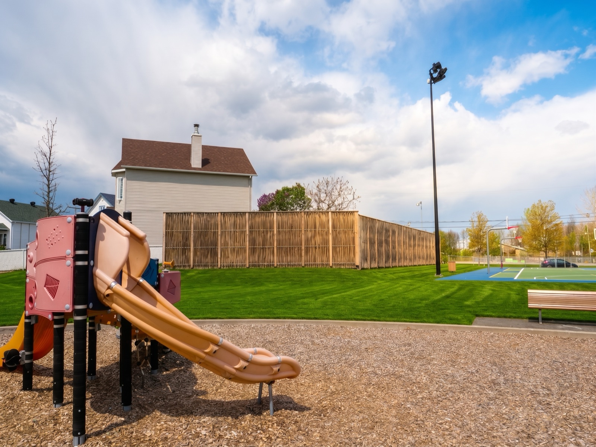

Mur antibruit — terrains de basketball au Parc des Riverains
Revenir aux murs antibruitLe contexte
Le Parc des Riverains, situé à proximité de l'école secondaire de Lavaltrie, comprend des terrains de basketball extérieurs dont l'utilisation génère des nuisances sonores pour les résidences voisines.
Le bruit caractéristique des terrains de basket — impacts répétés des ballons sur les surfaces dures et les panneaux — est un bruit impulsif, perçu comme particulièrement intrusif en milieu résidentiel calme. Une intervention acoustique ciblée était nécessaire pour rétablir le confort des riverains tout en maintenant l'usage sportif du parc.
La solution mise en place
Ramo a conçu un mur antibruit végétal de 35 m implanté sur la butte existante en bordure des terrains, du côté des résidences à protéger. La conception combine deux principes acoustiques :
- effet de barrière — bloquer la trajectoire directe du bruit vers les récepteurs résidentiels
- absorption — atténuer les réflexions et limiter la propagation latérale
L'approche s'appuie sur une étude acoustique réalisée par Vinacoustik, qui a simulé les niveaux sonores avant et après installation et permis de dimensionner la hauteur, la longueur et le positionnement optimal du mur. La hauteur recommandée de ≥ 3 m assure une couverture acoustique efficace au-dessus de la zone de jeu.

Résultats simulés
Réduction sonore — étude Vinacoustik
- réduction simulée de 5 à 15 dBA selon la position du récepteur
- protection des façades résidentielles directement exposées
- atténuation particulièrement efficace sur les bruits impulsifs (impacts de ballons)
Bénéfices pour le milieu
- maintien de l'usage sportif du parc
- retour au confort résidentiel pour les voisins immédiats
- solution acoustique justifiée par une simulation documentée

Co-bénéfices
Intégration paysagère
Parement végétal mieux intégré dans un parc municipal qu'un mur conventionnel en béton.
Acceptabilité sociale
Réponse concrète aux plaintes des riverains tout en préservant l'accès au sport extérieur.
Réplicable
Cas type pour les écoles, parcs municipaux et terrains de pickleball ou basketball.
Documenté
Étude acoustique externe (Vinacoustik) qui quantifie l'impact attendu — argument fort pour les décideurs municipaux.
Lecture technique du projet
Un enjeu similaire ?
Contactez-nous.
Notre équipe est disponible pour discuter de vos besoins et vous proposer la solution adaptée.